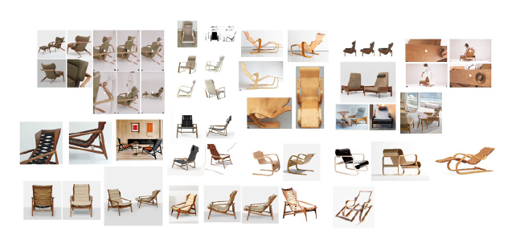

Neste conhecimento você explorará as etapas de um projeto de produtos. Para começar, é importante saber que um designer de interiores deve ter um conhecimento sólido das etapas de criação no design de produto, isso porque o mundo do design de interiores é um campo vasto, que abrange, em certos projetos, o desenvolvimento de mobiliários. Isso mesmo, é possível que, em algum momento da sua carreira, você projete móveis, não apenas em marcenaria planejada, mas também em mobiliário solto de design assinado. Esta área envolve a concepção e a realização de móveis funcionais, planejados a partir das necessidades dos clientes e que sejam esteticamente harmônicos.
Para desempenhar esse papel com excelência, é essencial compreender todas as etapas envolvidas na criação de produtos, as quais diferem em alguns aspectos das etapas de criação de um projeto de interiores.
De acordo com Baxter (2011), a organização das atividades de projeto é algo complexo. Para o autor, o desenvolvimento de um produto envolve, no mínimo, quatro etapas.
A primeira etapa é iniciada no momento em que a ideia do produto é lançada, explorando alguns conceitos para um primeiro teste de mercado. Nessa etapa, segundo o autor, o produto é lançado apenas como um desenho de apresentação para ser mostrado à equipe de projeto ou a um número pequeno de potenciais consumidores ou vendedores. Se for aprovado, deve-se passar para a segunda etapa.
A segunda etapa é a fase de projeto conceitual, na qual são definidas as principais funções e características formais do produto de uma maneira ampla. O conceito selecionado deverá ser submetido a um novo teste de mercado e, se for aprovado, inicia-se a terceira fase, em que haverá uma configuração mais detalhada do produto. Nessa fase, mudanças técnicas, envolvendo materiais e processos de fabricação, são estudadas. Sendo aprovados esses detalhamentos, passa-se aos desenhos para fabricação e desenvolvimento de protótipos.
Ainda, segundo Baxter (2011), os projetos de produtos não seguem uma linha reta, mas são marcados por avanços e retornos. Você verá em seguida uma sequência linear para desenvolvimento de produtos a partir das principais etapas de um projeto.
Prepare-se para uma jornada de descoberta a respeito de como a compreensão das etapas de criação no design de produto torna-se um alicerce sólido para o designer de interiores, capacitando-o a criar ambientes excepcionais.
O pré-projeto, também conhecido como fase de pré-design ou fase de concepção preliminar, é uma etapa fundamental no processo de design de produtos. Ele consiste em uma série de atividades e análises que ocorrem antes de iniciar efetivamente o desenvolvimento do produto. Essa fase é crucial para estabelecer uma base sólida e garantir que o projeto seja bem direcionado desde o início.
Confira algumas das principais atividades que compõem o pré-projeto em design de produtos.
A primeira etapa envolve a compreensão das necessidades dos clientes e do mercado. Isso inclui pesquisas para identificar tendências, demandas do consumidor e lacunas no mercado que o novo produto pode preencher.
Projetar um produto que seja relevante para o público-alvo é fundamental para o sucesso no mercado. Produtos que estão alinhados com o estilo de vida, os valores e as preferências do público têm uma maior probabilidade de serem bem recebidos e adotados pelos consumidores. Essa relevância é um fator-chave para a aceitação do produto.
Os objetivos do projeto são claramente estabelecidos nessa fase. Isso pode incluir metas de desempenho, requisitos de custo, prazos e critérios de sucesso que servirão como diretrizes para o restante do projeto.
É importante analisar os produtos concorrentes para entender o que já está disponível no mercado, identificar oportunidades de diferenciação e garantir que o novo produto seja competitivo.
As equipes de design reúnem-se para gerar uma ampla gama de ideias e conceitos para o produto. Nessa fase, a criatividade é incentivada e não há limitações no número de ideias geradas.
Após o brainstorming, os conceitos gerados são avaliados e classificados. Os mais promissores são selecionados para serem desenvolvidos com mais detalhes.
Protótipos conceituais simples são criados para visualizar e testar as ideias. Esses protótipos não precisam ser funcionais, mas ajudam a comunicar e validar os conceitos.
Com base nas informações coletadas até este ponto, um plano de projeto inicial é desenvolvido. Isso inclui um cronograma aproximado, orçamento estimado e uma estratégia de desenvolvimento.
Os resultados do pré-projeto são apresentados à equipe de gerenciamento ou aos interessados, que avaliam se o projeto deve continuar ou ser revisado com base nas informações coletadas.
Entenda a seguir o início do processo criativo desenvolvido pelo designer Thiago Sartorelli para a criação da poltrona Ginga.
Em um primeiro momento, Sartorelli apresenta algumas perguntas fundamentais que guiaram o seu processo criativo. Assim, questionamentos como “o que vou projetar?”, “por que vou projetar?”, “como vou projetar?” e “para quem vou projetar?” criam um ambiente próspero para o delineamento do projeto. Após esses questionamentos, o designer investiga o público-alvo potencial para a sua poltrona e representa-o em um painel.
Ao conhecer o público-alvo, os designers têm a capacidade de compreender as necessidades específicas, as expectativas e os desejos desse grupo de consumidores. Essa compreensão profunda permite direcionar o processo de design de forma a criar produtos que atendam a essas demandas de maneira eficaz. Isso significa que o produto resultante tem uma maior probabilidade de ser funcional e útil para o público a que se destina.
Veja na figura o painel que representa o público-alvo do designer para a poltrona Ginga.
Painel de público-alvo
Fonte: Sartorelli (2023)
Na imagem são apresentados os elementos que servirão de apoio ao designer para identificação do público-alvo. Imagens de natureza e pessoas são retratadas e darão apoio à criação do conceito do móvel.
A pesquisa de mercado e a análise inicial ajudam a equipe de design a compreender o ambiente competitivo e as necessidades específicas dos consumidores. Isso inclui a identificação de lacunas no mercado, oportunidades não atendidas e problemas que os produtos podem resolver. Essa compreensão é essencial para a criação de um produto que seja relevante e atraente para os clientes.
Veja como Sartorelli sintetiza essa etapa de pesquisa em um painel no qual produtos concorrentes e similares são estudados. Nesse estudo, as questões formais/estéticas e funcionais são compreendidas e possíveis lacunas de mercado são identificadas.

Pesquisa de similares e concorrentes para o desenvolvimento do
móvel
Fonte: Sartorelli (2023)
Na imagem são apresentadas poltronas similares e produtos concorrentes à poltrona que será desenvolvida. São poltronas com encosto inclinado e com base em madeiras com tons médios, mais caramelizados. Os formatos são bem diversos, algumas com pés mais curvos e longínquos, outras com os quatro pés em estilo palito. Esse estudo servirá para a elaboração dos primeiros croquis.
O passo seguinte é a geração de alternativas. Nessa fase, os designers exploram uma variedade de ideias, conceitos e soluções criativas para atender a um determinado problema ou necessidade. Essa etapa é um estágio crucial, frequentemente marcado por brainstorming e experimentação, que visa criar um leque diversificado de opções de design. Veja na figura o processo de desenvolvimento de alternativas para a poltrona Ginga.
Croquis da poltrona Ginga
Fonte: Sartorelli (2023)
Na imagem são apresentados vários croquis e alguns mock-ups da poltrona Ginga. Nessas imagens são realizados alguns estudos formais da poltrona. São apresentadas várias possibilidades de croquis, todos com formatos fluidos e linhas gestuais e orgânicas. Os desenhos são bidimensionais e a modelagem é em alguns materiais como argila e papelão.
A geração de alternativas no design de produtos é um estágio criativo e exploratório, no qual a imaginação e a experimentação desempenham um papel fundamental. É uma etapa fundamental para garantir que o produto final seja inovador, funcional e capaz de atender às necessidades do público-alvo. A partir das alternativas geradas, os designers podem avançar na criação de produtos sólidos e bem-sucedidos.
A fase de mock-up é uma etapa crucial que envolve a criação de representações físicas ou visuais do conceito de design antes da produção em massa. Esses mock-ups permitem que a equipe de design avalie o produto de maneira tangível e identifique problemas, faça melhorias e refine o design. Isso pode incluir a criação de modelos físicos, em escala real ou em tamanho reduzido, bem como representações visuais, como desenhos técnicos ou renderizações em 3D (tridimensionais).
Uma das principais funções da fase de mock-up é a realização de testes de usabilidade, nos quais os usuários potenciais interagem com os modelos para avaliar a facilidade de uso, a ergonomia e a experiência geral do usuário. Os feedbacks obtidos nesses testes são essenciais para aperfeiçoar o design antes da produção. Além disso, os mock-ups são usados para comunicar o conceito de design aos clientes e outras partes interessadas, facilitando a compreensão e a tomada de decisões informadas.
Essa fase também ajuda a economizar recursos, pois permite identificar e corrigir problemas de design antes que se tornem custosos de resolver durante a produção em larga escala. Assim, a fase de mock-up contribui para a criação de produtos de alta qualidade que atendem às expectativas dos clientes e são funcionais e esteticamente agradáveis.
Para o desenvolvimento de mock-ups, uma variedade de materiais pode ser utilizada, dependendo das necessidades do projeto, do estágio de desenvolvimento e do objetivo do mock-up. É sempre interessante que o projetista esteja atento à questão da sustentabilidade, reaproveitando materiais para a construção de seus mock-ups.
Confira alguns dos principais materiais frequentemente usados:
O papelão é um material versátil e acessível para criar mock-ups de mobiliário. Ele pode ser cortado e moldado facilmente para representar formas e estruturas. É especialmente útil para criar modelos de tamanho real ou maquetes de conceitos iniciais.
Caixa de papelão
Fonte: Freepik (2023)
Na imagem há uma caixa de papelão fechada.
A espuma de poliestireno ou poliuretano é leve e pode ser esculpida para criar mock-ups de formas complexas. Esse material é frequentemente usado para representar contornos de assentos, encostos ou detalhes decorativos.
Espuma de Poliestireno
Fonte: Freepik (2023)
Na imagem são apresentados alguns pedaços de espuma de poliestireno.
O MDF (medium density fiberboard ou “placa de fibra de média densidade”) é um material comum na fabricação de móveis e pode ser usado para criar protótipos e mock-ups de alta fidelidade. Ele é fácil de cortar, moldar e pintar, sendo assim adequado para criar modelos realistas.
Chapas de MDF
Fonte: Freepik (2023)
Na imagem há três chapas de MDF nas cores branca, amadeirada e azul-marinho, dispostas sobre pequenas toras de madeira.
O papel-pluma (foam board) é uma placa de espuma revestida com papel em ambos os lados. É leve, fácil de cortar e adequado para representar superfícies planas em móveis.
Folhas de papel-pluma
Fonte: Fluir (s. d.)
Na imagem existem algumas folhas de papel-pluma na cor chumbo sobrepostas.
O papel machê é um material versátil e econômico, que pode ser usado de várias maneiras no desenvolvimento de mock-ups de produtos, como a modelagem de formas e a criação de texturas.
Papel machê
Fonte: Ramirez (2021)
Na imagem tem-se uma esfera de papel machê sendo segurada por uma mão humana.
Embora a argila seja mais comumente associada à escultura e modelagem artística, ela também tem aplicações valiosas em design de produto. A argila pode ser moldada e esculpida para criar formas tridimensionais que representam partes de um produto, como o corpo de um objeto, um componente de mobiliário ou uma superfície arredondada. Além disso, a argila é fácil de trabalhar e permite uma experimentação rápida. Os designers podem fazer ajustes e interações rapidamente à medida que refinam o design do produto.
Argila na criação de mock-ups
Fonte: Freepik (2023)
Mãos modelam um formato esférico de argila.
Podem ser usados como estruturas básicas para representar a forma geral de um produto. Eles podem ser cortados, dobrados e colados para criar uma estrutura que se assemelhe ao tamanho e à forma do produto final.
Palitos de madeira
Fonte: Freepik (2023)
Na imagem são apresentados alguns palitos de madeira.
Podem ser usados para criar estruturas básicas, semelhantemente ao uso dos palitos de churrasco. Eles podem ser dobrados e unidos para formar a estrutura do produto ou para criar molduras e esqueletos. Se o seu produto incluir partes móveis ou dobradiças, clipes e arames podem ser usados para representar essas funcionalidades. Você pode dobrar os clipes de maneira adequada e prendê-los com outros materiais, como papelão, para simular essas características.
Clipes de papel
Fonte: Freepik (2023)
A imagem apresenta dois clipes de papel, feitos de metal. Esse material é muito útil na construção de maquetes.
Permite a modelagem de detalhes, curvas, além disso, pode ser usada para simular texturas, como couro, metal, plástico e tecido.
A fase de projeto executivo em design de produtos é uma etapa crucial do processo de desenvolvimento, na qual os conceitos e ideias gerados durante as fases anteriores são detalhados e transformados em um projeto completo e prontamente executável. Essa fase envolve a criação de documentação técnica detalhada, que permitirá a fabricação ou produção do produto.
Nesse momento, testes com os protótipos são validados e melhorias são implementadas. A figura mostra a poltrona Ginga passando para a fase de projeto executivo, na qual ajustes no dimensionamento são executados e revisões quanto aos aspectos ergonômicos são aprimoradas.
Projeto executivo da poltrona Ginga
Fonte: Sartorelli (2023)
Na imagem há um compilado de fotografias do processo executivo da poltrona. Os protótipos são apresentados assim como as demonstrações da montagem, os usos e as pranchas de apresentação.
Observe a seguir as etapas que são atendidas na fase de projeto executivo:
Nessa etapa, os designers trabalham na especificação detalhada de todos os aspectos do produto, incluindo dimensões precisas, materiais, componentes e características específicas. Isso envolve a criação de desenhos técnicos, modelos CAD (computer-aided design) e planos detalhados.
Os materiais e componentes exatos a serem usados no produto são escolhidos e especificados. Isso considera a disponibilidade, os custos, o desempenho e outros critérios relevantes.
Durante essa fase, é comum criar protótipos funcionais do produto para testar e validar o design. Esses protótipos podem ser usados para verificar se todas as partes do produto funcionam como planejado e se atendem aos requisitos de desempenho.
Nessa fase são elaborados documentos que descrevem como o produto será fabricado em escala. Isso inclui instruções para montagem, soldagem, usinagem, corte a laser e outros processos de fabricação. Também podem ser criadas ferramentas e gabaritos de fabricação.
Durante essa fase, o produto é submetido a uma série de testes rigorosos para garantir que ele atenda a todos os requisitos de desempenho, segurança e qualidade. Os resultados dos testes são usados para fazer ajustes finais no projeto, se necessário.
Todos os documentos técnicos necessários para a produção em massa são preparados, incluindo listas de materiais, instruções de montagem, manuais do usuário e especificações técnicas detalhadas.
Um orçamento final é elaborado com base nas escolhas de materiais e nos processos de fabricação, o que ajuda a determinar os custos finais do projeto e a viabilidade econômica do produto.
Nesta etapa, todos os preparativos finais são feitos para iniciar a produção em massa do produto. Isso pode incluir a seleção de fornecedores, a configuração de linhas de produção e a criação de planos de qualidade.
Segundo o designer Thiago Sartorelli, nessa etapa de projeto executivo buscou-se simplificar o processo de produção e ao mesmo tempo escalar a produtividade com garantia de padronização entre as unidades produzidas. O designer propôs nessa etapa a utilização de madeira laminada. O GIF (Sartorelli, 2023) mostra os registros feitos pelo designer das melhorias no detalhamento da poltrona Ginga.
Detalhamentos na poltrona Ginga
Fonte: Sartorelli (2023)
A animação apresenta o protótipo da poltrona montado. A poltrona tem encosto alto, assento alongado e inclinado e a parte posterior serve como base. Os braços são em folha de metal dobrada, em espessura de aproximadamente cinco centímetros. Os braços são em formato elíptico e os pés da poltrona são integrados por uma barra de madeira horizontal.
Como comentado anteriormente, a fase de prototipagem funcional é um trabalho importante para o design de mobiliário. É um componente crítico do processo de desenvolvimento de produtos, na qual os conceitos e as ideias geradas anteriormente começam a ganhar forma física. Essa etapa consiste em criar modelos ou protótipos tangíveis que representem as soluções de design propostas, de forma funcional, diferentemente do mock-up.
A prototipação possibilita que os designers e as equipes de desenvolvimento visualizem e avaliem como o produto final poderá se parecer e funcionar na vida real. Isso é essencial para tomar decisões informadas sobre o design e identificar qualquer problema potencial que possa surgir durante a produção em escala. Na figura, observe a fase de prototipação da poltrona Ginga.
Fase de prototipação
Fonte: Sartorelli (2023)
Na imagem são apresentadas as partes do protótipo da poltrona desmontado, com um croqui da poltrona ao lado. As partes do protótipo são de madeira, sem tratamento e pintura, e metal.
A etapa de especificação em um projeto de produto é uma fase fundamental que envolve a definição clara e detalhada de todos os requisitos, as características e os parâmetros do produto que está sendo desenvolvido. Essa etapa serve como base para todo o processo de design, desenvolvimento e fabricação do produto.
Nessa etapa são consideradas questões como restrições e regulamentações, padrões de segurança, normas ambientais, regulamentações de mercado. Além disso, são decididos os materiais e componentes que serão utilizados na fabricação do produto, o que inclui a seleção de materiais, peças, eletrônicos, software (se aplicável) e qualquer outra coisa necessária para construir o produto.
Na fase de especificação são detalhados também os custos e o orçamento do produto, e também é estabelecido um orçamento para o projeto, considerando os custos de materiais, mão de obra, equipamentos, entre outros. O controle de custos é fundamental para garantir que o projeto permaneça dentro do orçamento.
É importante que na etapa de especificação sejam realizados testes e validações para garantir que o produto atenda aos requisitos especificados. Isso pode incluir testes de desempenho, testes de durabilidade e testes de segurança.
Todo o processo de especificação deve ser documentado de forma clara e completa para que todas as partes envolvidas no projeto tenham acesso às informações necessárias.
A etapa de especificação é essencial para garantir que o produto seja desenvolvido de acordo com as expectativas dos clientes e os requisitos técnicos e regulamentares, e também para evitar problemas e retrabalhos no decorrer do projeto. Ela serve como um guia para toda a equipe de desenvolvimento e produção, fornecendo diretrizes claras para alcançar os objetivos estabelecidos.
A etapa de memorial descritivo é uma parte importante da documentação que descreve detalhadamente as características técnicas, funcionais e de design do produto em desenvolvimento. Esse documento serve como uma referência para a equipe de design, engenharia, produção e outras partes interessadas no projeto. No memorial descritivo constarão informações desde a descrição geral do produto até as especificações técnicas, como dimensões, peso, potência, capacidade, tolerâncias, materiais utilizados, propriedades físicas e químicas relevantes, entre outros.
O memorial descritivo é uma parte fundamental da documentação de projeto de produto, pois fornece uma base sólida para a equipe de desenvolvimento e produção trabalhar de acordo com as especificações e os requisitos estabelecidos. Ele também é útil para comunicação com partes interessadas, como clientes, fornecedores e reguladores, garantindo que todos tenham uma compreensão clara do produto em desenvolvimento.
As pranchas de apresentação em um projeto de design de produto são documentos visuais que ajudam a comunicar e apresentar o projeto de forma clara e eficaz. Elas são frequentemente usadas para transmitir informações essenciais sobre design, conceito, processo de desenvolvimento e especificações técnicas do produto. As pranchas de apresentação são uma parte fundamental da documentação de design e podem incluir uma variedade de elementos visuais, como imagens, ilustrações, texto e gráficos.
A figura mostra uma imagem de apresentação (render) da poltrona Ginga. Observe que na imagem é possível ver os materiais e a estrutura do móvel.
Render de apresentação
Fonte: Sartorelli (2023)
Na figura é apresentada uma imagem renderizada da poltrona Ginga, ou seja, produzida por software de modelagem 3D. A poltrona está em uma posição oblíqua, em que é possível ver sua lateral e vista posterior. A poltrona é apresentada em madeira, com parte estrutural em metal.
Nesta figura é possível ver ainda uma perspectiva explodida da poltrona, em que os elementos de fixação são apresentados e uma imagem de conjunto é possibilitada, o que facilita a compreensão da equipe de produção.
Perspectiva explodida da poltrona Ginga
Fonte: Sartorelli (2023)
Na perspectiva explodida é apresentada uma imagem digital da poltrona, na qual os elementos de montagem e fixação são apresentados. Esses elementos aparecem suspensos no ar e são eficientes para que a equipe de design entenda a montagem da poltrona.
Já nesta figura pode-se ver as pranchas de apresentação da poltrona, nas quais elementos técnicos são elaborados à equipe como forma de comunicação.
Pranchas de apresentação de projeto
Fonte: Sartorelli (2023)
São apresentadas pranchas em formato A3 com detalhamentos formais e dimensionais da poltrona, além de algumas imagens de livros, importantes para as informações ergonômicas do projeto.
As pranchas de apresentação são uma ferramenta valiosa para transmitir ideias de design de forma clara e persuasiva a colegas, clientes, investidores ou qualquer pessoa envolvida no projeto. Elas devem ser organizadas de forma lógica e visualmente atraente para garantir que a equipe de design compreenda o projeto de maneira eficaz.
Em resumo, este conteúdo, que contou com o apoio do designer Thiago Sartorelli, o qual gentilmente compartilhou a documentação de projeto da poltrona Ginga, mostrou que as etapas de um projeto de produto são um caminho meticuloso que guia a concepção, o desenvolvimento e o aperfeiçoamento de um produto desde sua ideia inicial até sua realização.
Cada etapa, desde a pesquisa inicial até a produção final, desempenha um papel crucial na criação de produtos que atendam às necessidades dos consumidores, ou seja, produtos funcionais, esteticamente atraentes e economicamente viáveis.
O design desempenha um papel central em todas essas etapas. Ele é o fio condutor que permeia o processo de criação, garantindo que o produto seja não apenas útil e funcional, mas também agradável ao usuário e competitivo no mercado. O design não é apenas uma questão de aparência; ele influencia profundamente a experiência do usuário, a qualidade do produto e sua capacidade de se destacar em um mercado saturado.
À medida que você explora as etapas de um projeto de produto e aprofunda sua compreensão da importância do design, fica claro que o design de produto não é um mero detalhe, mas sim uma disciplina fundamental que impacta diretamente a inovação, a eficácia e o sucesso de um produto no mercado. Portanto, ao avançar neste estudo sobre design de produto, você continuará a explorar como as escolhas de design moldam produtos que enriquecem a vida das pessoas e impulsionam o progresso em uma variedade de setores industriais.